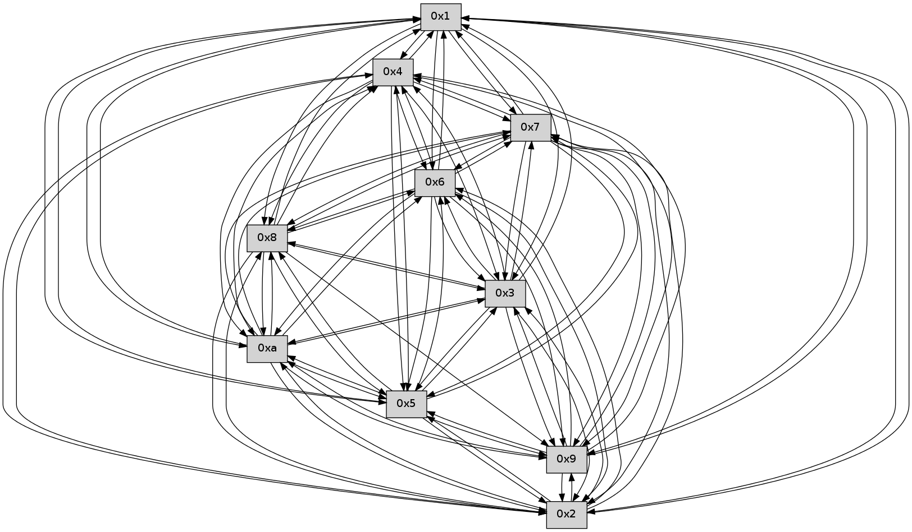

>> << IDX [start] -100 -25 -5 +0 +5 +25 +100 [380.307583094]
 Previous packets
----------------------------------------------------------------------
375.578793 beacon01(faad) #0 coord=01,02,03,04,05,06,07,0a,09,08 cycle=688.0ms assoc
-- color-indic=0 64 26 c5
375.588776 beacon02(faad) #0 coord=01,02,03,04,05,06,07,0a,09,08 cycle=688.0ms assoc 64 b5 f4
375.598775 beacon03(faad) #0 coord=01,02,03,04,05,06,07,0a,09,08 cycle=688.0ms assoc 64 cf b9
375.608775 beacon04(faad) #0 coord=01,02,03,04,05,06,07,0a,09,08 cycle=688.0ms assoc 64 b8 53
375.618776 beacon05(faad) #0 coord=01,02,03,04,05,06,07,0a,09,08 cycle=688.0ms assoc 64 c2 1e
375.628775 beacon06(faad) #0 coord=01,02,03,04,05,06,07,0a,09,08 cycle=688.0ms assoc 64 4c c9
375.638775 beacon07(faad) #0 coord=01,02,03,04,05,06,07,0a,09,08 cycle=688.0ms assoc 64 36 84
375.648781 beacon0a(faad) #0 coord=01,02,03,04,05,06,07,0a,09,08 cycle=688.0ms assoc 64 47 8f
375.658781 beacon09(faad) #0 coord=01,02,03,04,05,06,07,0a,09,08 cycle=688.0ms assoc 64 c9 58
375.668781 beacon08(faad) #0 coord=01,02,03,04,05,06,07,0a,09,08 cycle=688.0ms assoc 64 b3 15
375.679966 [Hello(1): seq=152 sym=4,2,9,5,10,3,8,6,7 sysInfo= stat=4:5,0,0,0/2:7,0,0,0/9:15,0,0,0/5:10,0,0,0/10:3,0,0,0/3:9,0,0,0/8:12,0,0,0/6:2,0,0,0/7:5,0,0,0]
375.683075 [Hello(6): seq=243 sym=2,3,5,4,7,9,8,10,1 sysInfo= stat=2:1,0,0,0/3:0,0,0,0/5:1,0,0,0/4:5,0,0,0/7:10,0,0,0/9:15,0,0,0/8:15,0,0,0/10:10,0,0,0/1:15,0,0,0]
375.687868 PARSE ERROR************************
Traceback (most recent call last):
File "PacketAnalysis.py", line 167, in showOperaPacket
structPacket = OperaPacketParse.parsePacket(rawPacket)
File "../../pkg-python/HipSens/Core/OperaPacketParse.py", line 461, in parsePacket
return parseHelloMessage(data)
File "../../pkg-python/HipSens/Core/OperaPacketParse.py", line 125, in parseHelloMessage
struct.unpack("!H",linkList[:2])[0])
error: unpack requires a string argument of length 2
48 34 07 00 00 f3 00 02 02 12 02 00 03 00 05 00 06 00 04 00 08 00 09 00 0a 00 01 00 53 04 00 00 00 00 4c 12 00 0e 00 0c 00 05 00 01 00 0d 00 09 00 0b 00 08 00 04 4d f2
----------------------------------------------------------------------
376.366925 beacon01(faad) #0 coord=01,02,03,04,05,06,07,0a,09,08 cycle=688.0ms assoc
-- color-indic=0 64 9a c0
376.376908 beacon02(faad) #0 coord=01,02,03,04,05,06,07,0a,09,08 cycle=688.0ms assoc 64 09 f1
376.386907 beacon03(faad) #0 coord=01,02,03,04,05,06,07,0a,09,08 cycle=688.0ms assoc 64 73 bc
376.396909 beacon04(faad) #0 coord=01,02,03,04,05,06,07,0a,09,08 cycle=688.0ms assoc 64 04 56
376.406908 beacon05(faad) #0 coord=01,02,03,04,05,06,07,0a,09,08 cycle=688.0ms assoc 64 7e 1b
376.416908 beacon06(faad) #0 coord=01,02,03,04,05,06,07,0a,09,08 cycle=688.0ms assoc 64 f0 cc
376.426907 beacon07(faad) #0 coord=01,02,03,04,05,06,07,0a,09,08 cycle=688.0ms assoc 64 8a 81
376.436912 beacon0a(faad) #0 coord=01,02,03,04,05,06,07,0a,09,08 cycle=688.0ms assoc 64 fb 8a
376.446914 beacon09(faad) #0 coord=01,02,03,04,05,06,07,0a,09,08 cycle=688.0ms assoc 64 75 5d
376.456914 beacon08(faad) #0 coord=01,02,03,04,05,06,07,0a,09,08 cycle=688.0ms assoc 64 0f 10
376.468074 [Hello(10): seq=176 sym=6,3,2,5,9,8,7,4,1 sysInfo= stat=6:6,0,0,0/3:1,0,0,0/2:7,0,0,0/5:4,0,0,0/9:2,0,0,0/8:6,0,0,0/7:10,0,0,0/4:14,0,0,0/1:3,0,0,0]
376.471715 [Hello(5): seq=244 sym=7,6,4,3,1,9,8,10,2 sysInfo= stat=7:14,0,0,0/6:0,0,0,0/4:14,0,0,0/3:10,0,0,0/1:1,0,0,0/9:9,0,0,0/8:11,0,0,0/10:12,0,0,0/2:4,0,0,0]
376.474546 [Hello(8): seq=187 sym=5,2,3,4,7,6,9,10,1 sysInfo= stat=5:11,0,0,0/2:13,0,0,0/3:11,0,0,0/4:14,0,0,0/7:5,0,0,0/6:8,0,0,0/9:6,0,0,0/10:1,0,0,0/1:9,0,0,0]
376.478258 [Hello(9): seq=187 sym=5,3,4,7,6,8,10,1 sysInfo= stat=5:4,0,0,0/3:15,0,0,0/4:9,0,0,0/7:6,0,0,0/6:12,0,0,0/8:9,0,0,0/10:6,0,0,0/1:6,0,0,0]
376.487796 [Hello(4): seq=244 sym=5,7,6,3,9,8,10,1 sysInfo= stat=5:3,0,0,0/7:15,0,0,0/6:2,0,0,0/3:13,0,0,0/9:9,0,0,0/8:14,0,0,0/10:1,0,0,0/1:1,0,0,0]
376.491051 [Hello(3): seq=244 sym=1,7,6,2,4,8,9,10,5 sysInfo= stat=1:0,0,0,0/7:9,0,0,0/6:6,0,0,0/2:0,0,0,0/4:8,0,0,0/8:7,0,0,0/9:0,0,0,0/10:9,0,0,0/5:5,0,0,0]
376.496439 [Hello(2): seq=241 sym=4,5,7,6,3,9,8,10,1 sysInfo= stat=4:11,0,0,0/5:15,0,0,0/7:9,0,0,0/6:0,0,0,0/3:3,0,0,0/9:4,0,0,0/8:14,0,0,0/10:11,0,0,0/1:14,0,0,0]
----------------------------------------------------------------------
377.155058 beacon01(faad) #0 coord=01,02,03,04,05,06,07,0a,09,08 cycle=688.0ms assoc
-- color-indic=0 64 8e ae
377.165042 beacon02(faad) #0 coord=01,02,03,04,05,06,07,0a,09,08 cycle=688.0ms assoc 64 1d 9f
377.175041 beacon03(faad) #0 coord=01,02,03,04,05,06,07,0a,09,08 cycle=688.0ms assoc 64 67 d2
377.185041 beacon04(faad) #0 coord=01,02,03,04,05,06,07,0a,09,08 cycle=688.0ms assoc 64 10 38
377.195042 beacon05(faad) #0 coord=01,02,03,04,05,06,07,0a,09,08 cycle=688.0ms assoc 64 6a 75
377.205042 beacon06(faad) #0 coord=01,02,03,04,05,06,07,0a,09,08 cycle=688.0ms assoc 64 e4 a2
377.215043 beacon07(faad) #0 coord=01,02,03,04,05,06,07,0a,09,08 cycle=688.0ms assoc 64 9e ef
377.225046 beacon0a(faad) #0 coord=01,02,03,04,05,06,07,0a,09,08 cycle=688.0ms assoc 64 ef e4
377.235046 beacon09(faad) #0 coord=01,02,03,04,05,06,07,0a,09,08 cycle=688.0ms assoc 64 61 33
377.245047 beacon08(faad) #0 coord=01,02,03,04,05,06,07,0a,09,08 cycle=688.0ms assoc 64 1b 7e
377.256513 [Hello(7): seq=244 sym=2,3,5,6,4,8,9,10,1 sysInfo= stat=2:15,0,0,0/3:13,0,0,0/5:6,0,0,0/6:1,0,0,0/4:14,0,0,0/8:10,0,0,0/9:12,0,0,0/10:9,0,0,0/1:4,0,0,0]
377.259716 [Hello(1): seq=153 sym=4,2,9,5,10,3,8,6,7 sysInfo= stat=4:6,0,0,0/2:8,0,0,0/9:0,0,0,0/5:11,0,0,0/10:4,0,0,0/3:10,0,0,0/8:13,0,0,0/6:3,0,0,0/7:6,0,0,0]
377.267352 [Hello(6): seq=244 sym=2,3,5,4,7,9,8,10,1 sysInfo= stat=2:2,0,0,0/3:1,0,0,0/5:2,0,0,0/4:6,0,0,0/7:11,0,0,0/9:0,0,0,0/8:0,0,0,0/10:11,0,0,0/1:15,0,0,0]
----------------------------------------------------------------------
377.943189 beacon01(faad) #0 coord=01,02,03,04,05,06,07,0a,09,08 cycle=688.0ms assoc
-- color-indic=0 64 32 ab
377.953172 beacon02(faad) #0 coord=01,02,03,04,05,06,07,0a,09,08 cycle=688.0ms assoc 64 a1 9a
377.963172 beacon03(faad) #0 coord=01,02,03,04,05,06,07,0a,09,08 cycle=688.0ms assoc 64 db d7
377.973172 beacon04(faad) #0 coord=01,02,03,04,05,06,07,0a,09,08 cycle=688.0ms assoc 64 ac 3d
377.983172 beacon05(faad) #0 coord=01,02,03,04,05,06,07,0a,09,08 cycle=688.0ms assoc 64 d6 70
377.993173 beacon06(faad) #0 coord=01,02,03,04,05,06,07,0a,09,08 cycle=688.0ms assoc 64 58 a7
378.003172 beacon07(faad) #0 coord=01,02,03,04,05,06,07,0a,09,08 cycle=688.0ms assoc 64 22 ea
378.013178 beacon0a(faad) #0 coord=01,02,03,04,05,06,07,0a,09,08 cycle=688.0ms assoc 64 53 e1
378.023179 beacon09(faad) #0 coord=01,02,03,04,05,06,07,0a,09,08 cycle=688.0ms assoc 64 dd 36
378.033177 beacon08(faad) #0 coord=01,02,03,04,05,06,07,0a,09,08 cycle=688.0ms assoc 64 a7 7b
378.044338 [Hello(2): seq=242 sym=4,5,7,6,3,9,8,10,1 sysInfo= stat=4:11,0,0,0/5:15,0,0,0/7:10,0,0,0/6:1,0,0,0/3:3,0,0,0/9:4,0,0,0/8:14,0,0,0/10:11,0,0,0/1:15,0,0,0]
378.047020 [Hello(3): seq=245 sym=1,7,6,2,4,8,9,10,5 sysInfo= stat=1:1,0,0,0/7:10,0,0,0/6:7,0,0,0/2:1,0,0,0/4:8,0,0,0/8:7,0,0,0/9:0,0,0,0/10:9,0,0,0/5:5,0,0,0]
378.053374 [Hello(10): seq=177 sym=6,3,2,5,9,8,7,4,1 sysInfo= stat=6:7,0,0,0/3:2,0,0,0/2:8,0,0,0/5:5,0,0,0/9:3,0,0,0/8:7,0,0,0/7:11,0,0,0/4:15,0,0,0/1:4,0,0,0]
378.059647 [Hello(9): seq=188 sym=5,2,3,4,7,6,10,1 sysInfo= stat=5:4,0,0,0/2:0,0,0,0/3:0,0,0,0/4:10,0,0,0/7:7,0,0,0/6:13,0,0,0/10:6,0,0,0/1:7,0,0,0]
378.063118 [Hello(4): seq=245 sym=5,7,6,2,3,9,8,10,1 sysInfo= stat=5:3,0,0,0/7:0,0,0,0/6:3,0,0,0/2:0,0,0,0/3:14,0,0,0/9:9,0,0,0/8:14,0,0,0/10:1,0,0,0/1:2,0,0,0]
----------------------------------------------------------------------
378.731321 beacon01(faad) #0 coord=01,02,03,04,05,06,07,0a,09,08 cycle=688.0ms assoc
-- color-indic=0 64 f6 a5
378.741303 beacon02(faad) #0 coord=01,02,03,04,05,06,07,0a,09,08 cycle=688.0ms assoc 64 65 94
378.751304 beacon03(faad) #0 coord=01,02,03,04,05,06,07,0a,09,08 cycle=688.0ms assoc 64 1f d9
378.761305 beacon04(faad) #0 coord=01,02,03,04,05,06,07,0a,09,08 cycle=688.0ms assoc 64 68 33
378.771305 beacon05(faad) #0 coord=01,02,03,04,05,06,07,0a,09,08 cycle=688.0ms assoc 64 12 7e
378.781304 beacon06(faad) #0 coord=01,02,03,04,05,06,07,0a,09,08 cycle=688.0ms assoc 64 9c a9
378.791306 beacon07(faad) #0 coord=01,02,03,04,05,06,07,0a,09,08 cycle=688.0ms assoc 64 e6 e4
378.801310 beacon0a(faad) #0 coord=01,02,03,04,05,06,07,0a,09,08 cycle=688.0ms assoc 64 97 ef
378.811310 beacon09(faad) #0 coord=01,02,03,04,05,06,07,0a,09,08 cycle=688.0ms assoc 64 19 38
378.821310 beacon08(faad) #0 coord=01,02,03,04,05,06,07,0a,09,08 cycle=688.0ms assoc 64 63 75
378.833735 [Hello(7): seq=245 sym=2,3,5,6,4,8,9,10,1 sysInfo= stat=2:0,0,0,0/3:14,0,0,0/5:7,0,0,0/6:2,0,0,0/4:15,0,0,0/8:10,0,0,0/9:13,0,0,0/10:10,0,0,0/1:5,0,0,0]
378.836768 [Hello(6): seq=245 sym=2,3,5,4,7,9,8,10,1 sysInfo= stat=2:3,0,0,0/3:2,0,0,0/5:2,0,0,0/4:7,0,0,0/7:11,0,0,0/9:1,0,0,0/8:1,0,0,0/10:12,0,0,0/1:15,0,0,0]
378.844275 [Hello(1): seq=154 sym=4,2,9,5,10,3,8,6,7 sysInfo= stat=4:7,0,0,0/2:9,0,0,0/9:1,0,0,0/5:12,0,0,0/10:5,0,0,0/3:11,0,0,0/8:13,0,0,0/6:4,0,0,0/7:6,0,0,0]
----------------------------------------------------------------------
379.519452 beacon01(faad) #0 coord=01,02,03,04,05,06,07,0a,09,08 cycle=688.0ms assoc
-- color-indic=0 64 4a a0
379.529434 beacon02(faad) #0 coord=01,02,03,04,05,06,07,0a,09,08 cycle=688.0ms assoc 64 d9 91
379.539433 beacon03(faad) #0 coord=01,02,03,04,05,06,07,0a,09,08 cycle=688.0ms assoc 64 a3 dc
379.549435 beacon04(faad) #0 coord=01,02,03,04,05,06,07,0a,09,08 cycle=688.0ms assoc 64 d4 36
379.559435 beacon05(faad) #0 coord=01,02,03,04,05,06,07,0a,09,08 cycle=688.0ms assoc 64 ae 7b
379.569435 beacon06(faad) #0 coord=01,02,03,04,05,06,07,0a,09,08 cycle=688.0ms assoc 64 20 ac
379.579436 beacon07(faad) #0 coord=01,02,03,04,05,06,07,0a,09,08 cycle=688.0ms assoc 64 5a e1
379.589439 beacon0a(faad) #0 coord=01,02,03,04,05,06,07,0a,09,08 cycle=688.0ms assoc 64 2b ea
379.599440 beacon09(faad) #0 coord=01,02,03,04,05,06,07,0a,09,08 cycle=688.0ms assoc 64 a5 3d
379.609440 beacon08(faad) #0 coord=01,02,03,04,05,06,07,0a,09,08 cycle=688.0ms assoc 64 df 70
379.623922 [Hello(4): seq=246 sym=5,7,6,2,3,9,8,10,1 sysInfo= stat=5:3,0,0,0/7:1,0,0,0/6:4,0,0,0/2:0,0,0,0/3:14,0,0,0/9:9,0,0,0/8:14,0,0,0/10:1,0,0,0/1:3,0,0,0]
379.626943 [Hello(3): seq=246 sym=1,7,6,2,4,8,9,10,5 sysInfo= stat=1:2,0,0,0/7:11,0,0,0/6:8,0,0,0/2:1,0,0,0/4:9,0,0,0/8:8,0,0,0/9:1,0,0,0/10:10,0,0,0/5:5,0,0,0]
379.631700 [Hello(9): seq=189 sym=5,2,3,4,7,6,10,1 sysInfo= stat=5:4,0,0,0/2:0,0,0,0/3:0,0,0,0/4:11,0,0,0/7:8,0,0,0/6:14,0,0,0/10:6,0,0,0/1:8,0,0,0]
379.633991 [Hello(8): seq=189 sym=5,2,3,4,7,6,9,10,1 sysInfo= stat=5:11,0,0,0/2:14,0,0,0/3:12,0,0,0/4:0,0,0,0/7:7,0,0,0/6:10,0,0,0/9:8,0,0,0/10:2,0,0,0/1:11,0,0,0]
379.639385 [Hello(2): seq=243 sym=4,5,7,6,3,9,8,10,1 sysInfo= stat=4:12,0,0,0/5:0,0,0,0/7:11,0,0,0/6:2,0,0,0/3:4,0,0,0/9:5,0,0,0/8:14,0,0,0/10:12,0,0,0/1:0,0,0,0]